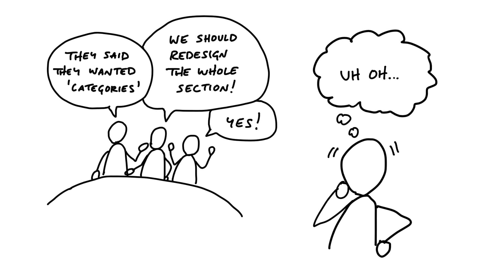

第三章 Set Boundaries 設定邊界¶

The first step of shaping is setting boundaries on what we’re trying to do. The conversations we have are going to be entirely different if people think we’re talking about a small improvement or a major redesign.
塑形的第一步是為我們要做的事情設定界限。如果人們認為我們只是在討論小幅改進，而不是大規模重新設計，那麼整個對話的方向就會完全不同。
The conversation about building a feature always starts with a raw idea, like “customers are asking for group notifications.” Before we all go down the rabbit hole discussing ways we can solve it, we should first set some broad terms on the discussion to make it productive.
關於開發新功能的討論，通常始於一個初步的想法，例如「客戶希望能夠收到群組通知」。在我們深入討論各種解決方案之前，應該先為這場討論設定一些基本範圍，以確保對話是有成效的。
Setting the appetite 設定胃口¶
Sometimes an idea gets us excited right away. In that case we need to temper the excitement by checking whether this is really something we’re going to be able to invest time in or not. If we don’t stop to think about how valuable the idea is, we can all jump too quickly to either committing resources or having long discussions about potential solutions that go nowhere.
有時候，一個想法會讓我們立刻感到興奮。在這種情況下，我們需要冷靜下來，評估這是否真的是我們能夠投入時間的事情。如果我們不先停下來思考這個想法的價值，就可能過快地承諾資源，或者陷入冗長但沒有結果的討論。
Other ideas are less exciting and feel more like a challenge we didn’t ask for. The customer wants a calendar; we don’t particularly want to build one, but we do feel we need to do something about the request.
另一方面，有些想法則沒那麼令人興奮，反而像是我們本來不想面對的挑戰。例如，客戶希望我們提供行事曆功能，但我們其實並不特別想開發它，然而，我們仍然覺得需要對這個需求做出某種回應。
Whether we’re chomping at the bit or reluctant to dive in, it helps to explicitly define how much of our time and attention the subject deserves. Is this something worth a quick fix if we can manage? Is it a big idea worth an entire cycle? Would we redesign what we already have to accommodate it? Will we only consider it if we can implement it as a minor tweak?
無論我們是迫不及待想開始，還是對投入感到猶豫，明確定義這個議題值得我們投入多少時間和精力，都是有幫助的。我們需要問自己：如果能夠快速修復，是否值得一試？這是一個足夠大的想法，需要完整的開發週期來實現嗎？我們會為了這個需求重新設計現有的功能嗎？還是我們只會考慮在能夠小幅調整的前提下才實施？
We call this the appetite. You can think of the appetite as a time budget for a standard team size. We usually set the appetite in two sizes:
我們稱這個概念為**胃口(appetite)**。你可以把它想像成一個標準團隊大小的時間預算。我們通常將胃口分為兩種大小：
- Small Batch: This is a project that a team of one designer and one or two programmers can build in one or two weeks. We batch these together into a six week cycle (more on that later).
- 小批（Small Batch）： 這類專案由一名設計師和一到兩名工程師，在一到兩週內完成。我們分批合併成一個六週的開發週期（稍後會詳細說明）。
- Big Batch: This project takes the same-size team a full six-weeks.
- 大批（Big Batch）： 這類專案需要相同大小的團隊，並且需時完整六週。
In rare cases where the scope is so big that a six-week project isn’t conceivable, we’ll try to hammer it down by narrowing the problem definition. If we still can’t shrink the scope, we’ll break off a meaningful part of the project that we can shape to a six-week appetite.
在少數情況下，如果專案的範圍過大，以至於無法在六週內完成，我們會嘗試透過縮小問題範圍來讓它變得可行。如果仍然無法縮減範圍，我們會拆分出一個有意義的部分，並將其調整為能夠在六週內完成的規模。
Fixed time, variable scope 固定時間，彈性範圍¶
An appetite is completely different from an estimate. Estimates start with a design and end with a number. Appetites start with a number and end with a design. We use the appetite as a creative constraint on the design process.
胃口（appetite）與預估時間（estimate）完全不同。 預估時間是先有設計，再計算所需時間；而胃口則是先決定可投入的時間，然後再根據這個限制來設計。我們將胃口視為設計過程中的創意約束條件。
This principle, called “fixed time, variable scope,” is key to successfully defining and shipping projects. Take this book for an example. It’s hard to ship a book when you can always add more, explain more, or improve what’s already there. When you have a deadline, all of a sudden you have to make decisions. With one week left, I can choose between fixing typos or adding a new section to a chapter. That’s the tension between time, quality, and scope. I don’t want to release a book with embarrassing typos, so I’ll choose to reduce the scope by leaving out the extra section. Without the pressure of the fixed deadline, I wouldn’t make the trade-off. If the scope wasn’t variable, I’d have to include the extra section. Then there’d be no time to fix the quality issues.
這個原則被稱為「固定時間，彈性範圍」，它是成功定義與交付專案的關鍵。以這本書為例，當你一直可以不斷新增內容、補充說明或改進現有內容，很難真正完成一本書。但當有了最後期限時，就必須做出取捨。例如，當只剩一週時間時，我可以選擇修正錯字或是新增一個章節。這就是時間、品質與範圍之間的權衡。如果我不希望書中有令人尷尬的錯字，我會選擇縮小範圍，放棄新增章節。如果沒有固定的最後期限，我就不會做出這種取捨；而如果範圍不能調整，那麼我就不得不包含新章節，導致沒有時間修正品質問題。
We apply this principle at each stage of the process, from shaping potential projects to building and shipping them. First, the appetite constrains what kind of a solution we design during the shaping process. Later, when we hand the work to a team, the fixed time box pushes them to make decisions about what is core to the project and what is peripheral or unnecessary.
我們在每個階段都運用這個原則，從塑造潛在專案到開發與交付。首先，在塑造過程中，胃口會限制我們設計的解決方案範圍。接著，當專案交付給團隊執行時，固定的時間盒子會迫使團隊決定哪些是專案的核心，哪些則是次要或不必要的部分。
“Good” is relative 「好」是相對的¶
There’s no absolute definition of “the best” solution. The best is relative to your constraints. Without a time limit, there’s always a better version. The ultimate meal might be a ten course dinner. But when you’re hungry and in a hurry, a hot dog is perfect.
沒有絕對「最佳」的解決方案，最好的選擇總是相對於你的限制而定。 如果沒有時間限制，就永遠會有更好的版本。就像完美的一頓飯可能是十道菜的盛宴，但當你又餓又趕時間時，一份熱狗就是最理想的選擇。
The amount of time we set for our appetite is going to lead us to different solutions. We could model a whole set of database columns in the fancy version, or just provide a flat textarea in the simple version. We could redesign the main landing page to accommodate a new feature, or we could push it back to a screen with fewer design constraints. We can only judge what is a “good” solution in the context of how much time we want to spend and how important it is.
我們設定的胃口會引導我們走向不同的解決方案。例如，在精緻版本中，我們可能會為資料庫建模一整組欄位，而在簡單版本中，可能只會提供一個基本的文字輸入框。同樣地，我們可能會為了一個新功能重新設計整個主頁，或者選擇將它放在設計限制較少的頁面裡。我們只能在可投入的時間與該功能的重要性的前提下，來判斷什麼才是「好」的解決方案。
Responding to raw ideas 回應初步想法¶
Our default response to any idea that comes up should be: “Interesting. Maybe some day.” In other words, a very soft “no” that leaves all our options open. We don’t put it in a backlog. We give it space so we can learn whether it’s really important and what it might entail.
對於任何新想法，我們的預設回應應該是：「有趣，也許以後可以考慮。」換句話說，這是一種非常柔和的「不」，讓我們保留所有選項的空間。我們不會立刻把它加入待辦清單，而是給它一些時間，看看它是否真的重要，以及它可能涉及哪些層面。
It’s too early to say “yes” or “no” on first contact. Even if we’re excited about it, we shouldn’t make a commitment that we don’t yet understand. We need to do work on the idea before it’s shaped enough to bet resources on. If we always say “yes” to incoming requests we’ll end up with a giant pile of work that only grows.
在第一次聽到一個想法時，還太早說「可以」或「不行」。即使我們對它感到興奮，也不應該在還沒完全理解的情況下做出承諾。我們需要進一步打磨這個想法，讓它足夠成熟，才值得投入資源。如果我們對所有進來的請求都說「好啊」，最終只會累積一大堆未完成的工作，且這個清單只會越來越長。
It’s important to keep a cool manner and a bit of a poker face. We don’t want to shut down an idea that we don’t understand. New information might come in tomorrow that makes us see it differently. On the other hand, showing too much enthusiasm right away can set expectations that this thing is going to happen. We may not be able to commit to it once we’ve put it into context with everything else we want to do.
因此，保持冷靜，適當維持一點撲克臉是很重要的。我們不想過早否決一個還沒弄清楚的想法，因為也許明天就會有新的資訊，讓我們對它有不同的看法。但另一方面，如果一開始就表現得太興奮，可能會讓人產生錯誤的期待，認為這個想法一定會實現。等到我們將它與其他計畫一起評估時，可能會發現無法承諾執行，這樣反而會造成困擾。
Narrow down the problem 縮小問題範圍¶
In addition to setting the appetite, we usually need to narrow down our understanding of the problem.
除了設定胃口，我們通常還需要縮小對問題的理解範圍。
We once had a customer ask us for more complex permission rules. It could easily have taken six weeks to build the change she wanted. Instead of taking the request at face value, we dug deeper. It turned out that someone had archived a file without knowing the file would disappear for everyone else using the system. Instead of creating a rule to prevent some people from archiving, we realized we could put a warning on the archive action itself that explains the impact. That’s a one-day change instead of a six-week project.
有一次，一位客戶希望我們提供更複雜的權限規則。如果直接接受這個請求，可能需要**六週**的時間來開發她想要的變更。但我們沒有照單全收，而是深入探討問題的根本原因。結果發現，真正的問題是有人將檔案歸檔，卻不知道這樣會讓系統中的其他人都看不到該檔案。與其新增一條權限規則來限制某些人歸檔，我們意識到其實可以加一個警告提醒使用者。原本需要六週才能解決的問題，變成了一天內就能完成的改動。
Another example is the “calendar view” from the previous chapter. Everyone knows what a calendar view is. But unpacking it revealed tons of unknowns and decisions that would drastically affect the scope. If we only want to spend six weeks instead of six months building a huge calendar, how do we narrow it down?
另一個例子是前一章提到的「行事曆檢視」。每個人都知道什麼是行事曆檢視，但當我們深入探討時，會發現裡面有許多未知的問題和需要做出決策的地方，這些都會大大影響範圍。如果我們只想花六週的時間，而不是六個月，來建造一個龐大的行事曆，那麼我們該如何縮小範圍呢？
In that case we flip from asking “What could we build?” to “What’s really going wrong?” Sure, a calendar sounds nice. But what is driving the request? At what point specifically does someone’s current workflow break down without this thing they’re asking for?
在這種情況下，我們會從問「我們能建造什麼？」轉變為問「實際上，問題是什麼？」當然，行事曆聽起來不錯。但究竟是什麼驅動了這個需求？具體來說，沒有他們要求的這個功能，哪一部分的工作流程會出現問題？
Case study: Defining “calendar” 個案研究：定義「行事曆」¶
In the case of the calendar request, we called a customer who asked for this feature. Instead of asking her why she wants a calendar and what it should look like, we asked her when she wanted a calendar. What was she doing when the thought occurred to ask for it?
在這個行事曆需求的案例中，我們聯繫了提出這個功能需求的客戶。我們沒有直接問她為什麼需要行事曆，或者她想要什麼樣的行事曆，而是問她**什麼時候**需要行事曆。她在什麼情況下會想到需要這個功能？
She told us she worked in an office with a big calendar drawn on a chalkboard wall. Her officemates marked when they were meeting clients in the handful of meeting rooms on the calendar. One day she was working from home. A client called and asked her to schedule a meeting. She had to drive to the office to look at the wall calendar. Traffic was terrible along the way, and in the end there wasn’t a free space that worked for her client. She could have saved an hour in traffic and a lot of frustration if she had been able to check for open spots on the calendar from her computer at home.
她告訴我們，她在一個辦公室工作，辦公室的牆上畫了一個大行事曆。她和同事會在行事曆上標註他們何時在會議室裡與客戶開會。某天，她在家辦公。這時，一位客戶打來電話，請她安排一個會議。她必須開車回辦公室查看牆上的行事曆。途中交通非常擁擠，最後她發現根本沒有合適的時間可以安排會議。如果她能夠從家裡的電腦上查看行事曆，確認有沒有空檔，她就能省下一小時的交通時間，也能避免許多不必要的沮喪。
The insight wasn’t “computerize the calendar”—that’s obvious. What we learned was that “see free spaces” was the important thing for this use case, not “do everything a calendar does.”
這個洞察並不是「將行事曆電腦化」—這是顯而易見的。我們學到的是，這個使用案例中重要的是「查看空閒時間」，而不是「做到行事曆的所有功能」。
This story, and others like it, gave us a specific baseline to design against. Basecamp had an agenda view of events. It worked for listing major deadlines and milestones but it wasn’t good for resource scheduling because you couldn’t see empty spaces on it. We narrowed down the need from “do everything a calendar does” to “help me see free spaces so I can figure out when to schedule something.”
這個故事，以及其他類似的案例，為我們提供了一個具體的設計基準。Basecamp 有一個事件的議程檢視，它能夠列出主要的截止日期和里程碑，但並不適用資源安排，因為你無法在上面看到空閒時間。我們將需求從「做到行事曆的所有功能」縮小為「幫我查看空閒時間，讓我能夠安排事項」。
We didn’t have a solution yet. But now we felt like we had a problem that was specific enough to spark an idea that could fit within our appetite. This led us to the simpler “Dot Grid” concept from the last chapter.
我們當時還沒有解決方案。但現在，我們感覺問題已經具體到足以激發出一個符合我們投入程度的想法。這最終引導我們想到前一章提到的簡單點陣（Dot Grid）概念。
What if we can’t figure out a specific pain point or use case? Our appetite can also tell us how much research is worthwhile. If it’s not critical now and we can’t get our hands around the problem, we’ll walk away from it and work on something else. Maybe in the future a new request or story will pop up that gives us better insight into the problem.
如果我們無法確定具體的痛點或使用情境呢？我們的**胃口**也能幫助我們決定研究的價值。如果現在這個問題不關鍵，而且我們無法釐清問題的本質，我們會選擇放手，轉而去處理其他事情。也許將來會有新的需求或故事出現，給我們提供對這個問題的更深入見解。
Watch out for grab-bags 小心抓包式需求¶
When it comes to unclear ideas, the worst offenders are “redesigns” or “refactorings” that aren’t driven by a single problem or use case. When someone proposes something like “redesign the Files section,” that’s a grab-bag, not a project. It’s going to be very hard to figure out what it means, where it starts, and where it ends. Here’s a more productive starting point: “We need to rethink the Files section because sharing multiple files takes too many steps.” Now we can start asking: What’s not working? In what context are there too many steps? What parts of the existing design can stay the same and what parts need to change?
當面對不清楚的想法時，最常見的問題就是那些沒有單一問題或使用情境驅動的「重新設計」或「重構」。當有人提出像是「重新設計檔案區域」這樣的要求，那就是一個抓包（Grab-bags），而不是一個專案。這樣的需求很難弄清楚它的含義，從哪裡開始，到哪裡結束。這裡有一個更具生產力的出發點：「我們需要重新思考檔案區域，因為分享多個檔案需要太多步驟。」現在我們可以開始問：哪部分出了問題？在哪些情境下步驟太多？現有設計中哪些部分可以保留，哪些需要改變？
A tell-tale sign of a grab-bag is the “2.0” label. We made the mistake in the past of kicking off a “Files 2.0” project without really considering what that meant. Our excitement about improving a huge part of our app got the better of us. We know there were a lot of problems with our Files feature, but we didn’t ask ourselves what specifically we were going to do. The project turned out to be a mess because we didn’t know what “done” looked like. We recovered by splitting the project into smaller projects, like “Better file previews” and “Custom folder colors.” We set appetites and clear expectations on each project and shipped them successfully.
「抓包」式需求的一個明顯指標是「2.0」標籤。過去我們曾犯過一個錯誤，啟動了「Files 2.0」專案，但沒有真正考慮它的具體含義。我們對改善應用程式一大塊功能的興奮，讓我們失去了方向。我們知道檔案功能有很多問題，但當時並沒有問自己具體要做什麼。最終，這個專案變得一團亂，因為我們不知道「完成」是什麼樣子。我們通過將這個專案拆分成更小的專案，如「更好的檔案預覽」和「自訂資料夾顏色」，來恢復秩序。我們為每個小專案設定了胃口和清晰的期望，並成功交付了這些專案。
Boundaries in place 設立邊界¶
When we have all three things—a raw idea, an appetite, and a narrow problem definition—we’re ready to move to the next step and define the elements of a solution.
當我們擁有這三樣東西——初步想法、胃口和狹小的問題定義——我們就準備好進入下一步，開始定義解決方案的各個元素。